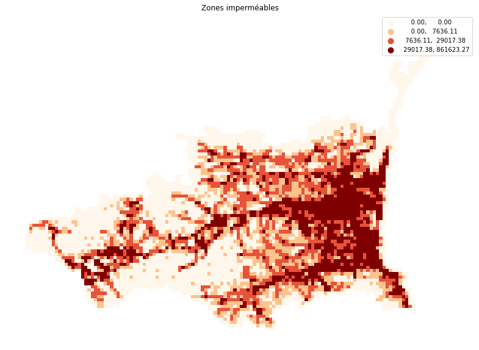

Atelier Duckdb
Atelier Duckdb
L’objectif de cet atelier est d’appréhender DuckDB ainsi que le format de données Parquet qui l’accompagne. DuckDB est une base de données ultra performante contenue dans un unique fichier. Elle permet notamment d’interroger des fichiers CSV et Parquet, ainsi que de générer des fichiers en utilisant la grammaire SQL, dont voici un rappel succinct.
Duckdb en action
Maintenant, nous allons ouvrir ensemble duckdb dans votre navigateur. Pour effectuer vos premières requêtes, il vous suffit de lancer une live demo. C’est austère, mais terriblement efficace ; vous allez le constater très rapidement !
Nous allons utiliser les données filosfi accessible ici : https://www.data.gouv.fr/fr/datasets/r/b480cead-3f46-4b1b-a943-62a009b83f7a
Les principales variables du fichier sont les suivantes :
- ind : le nombre de personnes dans les carreaux ;
- men : le nombre de ménage dans les carreaux ;
- lcog_geo : une agrégation des codes communes intersectant le carreaux. Pour obtenir le code de la commune principale, il suffit de sélectionner les cinq premiers caractères ;
- geometry : les coordonnées géographiques du carreaux ;
Le plus simple pour utiliser le fichier est de créer une vue, ce qui vous évitera d’écrire l’adresse du fichier à chaque fois.
CREATE OR REPLACE VIEW filosofi AS from read_parquet('https://www.data.gouv.fr/fr/datasets/r/b480cead-3f46-4b1b-a943-62a009b83f7a');On va commencer par calculer la population France entière :
select sum(ind)
from filosofi;A vous maintenant de calculer la population d’Auzeville dont le code communale est 31035.
Solution
select lcog_geo, sum(ind) as ind
from filosofi
where lcog_geo = '31035'
group by lcog_geo;Et maintenant, si vous calculiez la population de chaque département.
Solution
select substr(lcog_geo,1,2) as dep, sum(ind) as ind
from filosofi
group by substr(lcog_geo,1,2);Il est temps de s’arrêter et de réfléchir à ce que nous venons de faire ! Nous avons effectué une requête dans un navigateur sur une base de plus de 2 000 000 de lignes en quelques secondes ! Comment est-ce possible ?
Cela est rendu possible par :
Un peu de géographie
Maintenant, on va faire un peu de géographie à l’aide de l’extension spatial :
install spatial;
load spatial;Nous allons essayer de calculer la population à moins d’un kilomètre de la Tour Eiffel. Nous commencerons par créer le point de la Tour Eiffel, puis le disque d’un kilomètre. Attention, le système de projection des carreaux est le 3035 LAEA Europe. Commençons par définir le point :
select ST_Point (3756295, 2889313);A vous de faire un disque avec la commande buffer :
Solution
select st_buffer(ST_Point (3756295, 2889313),1000);On va faire l’intersection spatiale en créant une variable hubblo:
set variable hubblo = st_buffer(ST_Point (3756295, 2889313),1000);
select getvariable('hubblo');Que l’on peut intégrer dans une requête :
select * from filosofi
where ST_Intersects(filosofi.geometry, getvariable('hubblo'));Maintenant, à vous de calculer la population du hubblo :
Solution
select sum(ind) as ind, sum(men) as men
from filosofi
where ST_Intersects(filosofi.geometry, getvariable('hubblo'));Nous allons maintenant passer sous Cerise, ou vous pouvez continuer le spatial avec Benoît.
Pour le(s) Benoît(e.s) : Carroyer l’occupation du sol
Notre objectif est de compléter les données carroyées de l’Insee, en calculant pour chaque carreau son occupation du sol. Nous allons faire l’analyse sur les https://www.data.gouv.fr/fr/datasets/occupation-du-sol-a-grande-echelle-ign-et-cerema/ avec la base :
https://www.data.gouv.fr/fr/datasets/r/e56d8a6b-465d-480f-9973-e7d699b01770 dont la projection est le 3035
Il est temps de faire une vue (ocs_ge) de cette base :
Solution
CREATE OR REPLACE VIEW ocs_ge AS from read_parquet('https://www.data.gouv.fr/fr/datasets/r/e56d8a6b-465d-480f-9973-e7d699b01770');J’ai testé avant vous, le traitement est un peu lent, on va donc charger la table dans duckdb, soit dans la mémoire du navigateur puis faire une indexation spatiale:
create or replace table occ_sol as select * from ocs_ge;
create index sindex on occ_sol USING RTREE(geometry);Pour les mêmes raisons, à vous de charger en mémoire la vue filosofi et de la nommer carreaux et de déclarer un index spatial:
Solution
create or replace table carreaux as select * from filosofi;
create index sindex2 on carreaux USING RTREE(geometry);Une première requête spatiale
Le fichier OCS GE contient 2 variables d’intéret pour nous :
- CODE_CS : Couverture du sol ;
- geometry : les coordonnées géographiques des objets.
On va intersecter les carreaux de filosofi avec la table occ_sol. Pour ce faire, on détermine la table carreaux_66 contenant les carreaux des Pyrénées-Orientales toujours à l’aide de la variable lcog_geo
Solution
create or replace table carreaux_66 as
select *
from carreaux
where substr(lcog_geo,1,2)='66';Le calcul de l’occupation du sol par carreau repose sur l’utilisation de st_intersects et de st_intersection :
create or replace table occupation_carroye_66_1 as
select idcar_200m, CODE_CS, sum(st_area(st_intersection(occ_sol.geometry, carreaux_66.geometry))) as surface
from occ_sol, carreaux_66
where ST_Intersects(occ_sol.geometry, carreaux_66.geometry)
group by idcar_200m , CODE_CS;
select * from occupation_carroye_66_1 limit 10;Et si on construisait nos carreaux !
La couche carreaux ne couvre pas tout le département. Si on veut aller plus loin, il est nécessaire de faire une tesselation du territoire :
La première étape consiste à récupérer l’emprise spatiale de occ_sol :
create or replace table etendue as
select st_Xmin(geometry) as xmin, st_Xmax(geometry) as xmax, st_Ymin(geometry) as ymin, st_Ymax(geometry) as ymax
from (select ST_Extent_Agg(geometry) as geometry from occ_sol);Puis de découper l’espace en longitude et latitude pour déterminer les x,y des coins en bas à gauche des carreaux à partir de l’étendue spatiale obtenue précédemment. Une variable size est bien utile pour paramètrer la taille des carreaux :
set variable size = 1000;
create or replace table carreaux_size as
select x,y, ST_GeomFromText('POLYGON(('||x||' '||y||',
'||x + getvariable('size')||' '||y||',
'||x + getvariable('size')||' '||y+getvariable('size')||',
'||x||' '||y+getvariable('size')||',
'||x||' '||y||'))') as geometry
from
(select unnest(generate_series(cast(floor(xmin/getvariable('size'))*getvariable('size') as int), cast(floor(xmax/getvariable('size'))*getvariable('size') as int), getvariable('size'))) as x
from etendue),
(select unnest(generate_series(cast(floor(ymin/getvariable('size'))*getvariable('size') as int), cast(floor(ymax/getvariable('size'))*getvariable('size') as int), getvariable('size'))) as y
from etendue);Il nous reste plus qu’à faire l’intersection spatiale :
Solution
create or replace table occupation_carroye as
select x, y, CODE_CS, sum(st_area(st_intersection(occ_sol.geometry, carreaux_size.geometry))) as surface
from occ_sol, carreaux_size
where ST_Intersects(occ_sol.geometry, carreaux_size.geometry)
group by x,y,CODE_CS;
select * from occupation_carroye limit 10;Il suffit de faire un pivot et un merge pour obtenir une table chouette :
Solution
create or replace table t_occupation_carroye as
pivot occupation_carroye
on CODE_CS using sum(surface);
create or replace table carreaux_occupation_sol as
select *
from carreaux_size, t_occupation_carroye
where carreaux_size.x = t_occupation_carroye.x and carreaux_size.y = t_occupation_carroye.y;et maintenant on peut récupérer la table chez nous en la transformant en csv :
COPY carreaux_occupation_sol⟩ TO occupation_sol.geojsonn'
WITH (FORMAT GDAL, DRIVER 'GeoJSON', SRS '3035');puis en la téléchargant :
.files download carreaux_occupation_sol.parquet Et après avec un peu de SIG, on obtient par exemple la carte :
